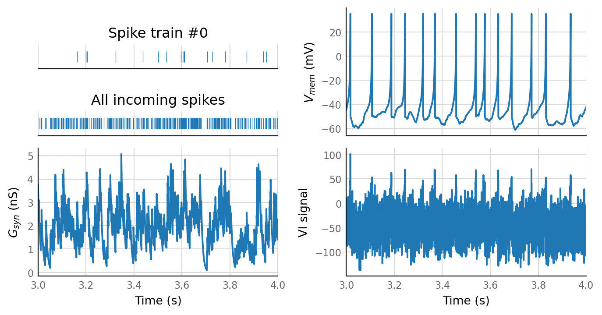

2021-01-13 • Multiple ROC’s¶
Here we repeat the simulation multiple times (each time varying one parameter), and for each repetition calculate an ROC curve (and associated area under that curve): how well could we classify all (spike_train, VI_signal)-pairs as connected or unconnected, for a range of p-value thresholds?
Setup¶
from voltage_to_wiring_sim.notebook_init import *
Preloading: numpy, numba, matplotlib.pyplot, seaborn.
Importing from submodules … ✔
Imported `np`, `mpl`, `plt`, `sns`
Imported codebase (`voltage_to_wiring_sim`) as `v`
Imported `*` from `v.support.units`
Setup autoreload
v.print_reproducibility_info()
This cell was last run by tfiers on yoga
on Thu 14 Jan 2021, at 19:00 (UTC+0100).
Last git commit (Thu 14 Jan 2021, 18:59).
No uncommitted changes
from voltage_to_wiring_sim.N_to_1_experiment import N_to_1_SimParams, simulate, sim_and_eval, plot_slice
from voltage_to_wiring_sim.sim.neuron_params import cortical_RS
Base parameters¶
sim_params = N_to_1_SimParams(
sim_duration = 5 * minute,
timestep = 0.1 * ms,
num_spike_trains = 30,
p_connected = 0.5,
spike_rate = 20 * Hz,
Δg_syn = 0.8 * nS,
τ_syn = 7 * ms,
neuron_params = cortical_RS,
imaging_spike_SNR = 4,
);
sim_data = simulate(sim_params);
plot_slice(sim_data, t_start=3.05 * second, duration=.02 * second)
